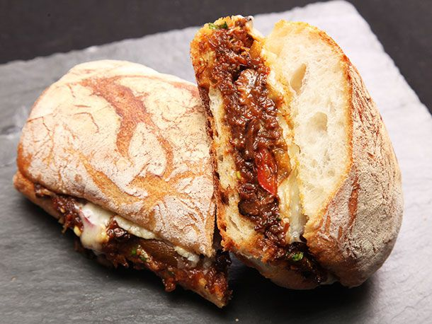

Powered By: Odin Recipes
Oxtail Torta

Photo by: Gio
An oxtail torta is a Mexican sandwich made with a crusty bread roll, often a telera or bolillo, that is filled with slow-cooked oxtail meat, typically seasoned with Mexican spices such as cumin, coriander, and chili powder. The oxtail meat is usually tender and flavorful, and it is often accompanied by toppings such as avocado, lettuce, tomato, and pickled onions. Some variations may also include cheese, mayo, or spicy sauces. The result is a delicious and hearty sandwich that is popular in Mexican cuisine.
Ingredients:
For Oxtail:
- 3-4 lbs Oxtail(cut into pieces)
- 1/4 cup Olive Oil
- 2 Sweet Onions(julienned)
- 4 Garlic Cloves(rough chopped)
- 3-4 cups Beef Stock
- 28 oz Hot Tomato Sauce(pato can)
- 3 Bay Leaves
- 1 tbsp Black Pepper
- 1 sprig Fresh Rosemary
- Salt to Taste
For Assembly:
- Garlic Aioli
- Gruyere Cheese
- Fresh Bread
Directions:
- In a dutch oven add all the oxtail ingredients making sure not to stack the oxtails on each other. Cover with lid and bake in oven at 400 degrees for four hours or until meat falls off the bone.
- While oxtail is being prepared take fresh bread and add garlic aioli to both sides and toast until desired texture.
- Remove oxtail meat from bone and scoop to toasted bread. Add cheese and enjoy.
Return Home